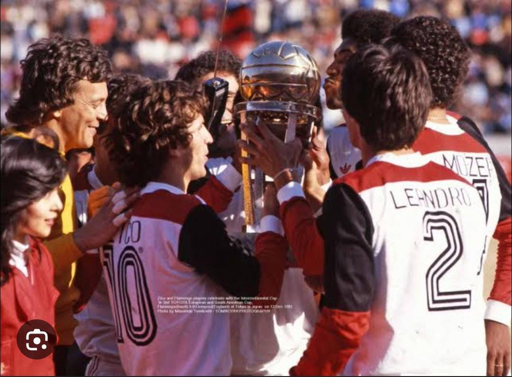

Data 1981
O Flamengo conquistou o título mundial em 1981, comandado por Zico, derrotando o Liverpool por 3 a 0 no Japão, com gols de Nunes e 2 de Adílio.
O Flamengo teve uma temporada marcante em 1981, sagrando-se campeão da Copa Libertadores. Na final, enfrentou o Club Cobreloa do Chile, vencendo por 2 a 0 no jogo de ida e empatando em 1 a 1 no jogo de volta, garantindo vaga na Copa Intercontinental.
Na Copa Intercontinental, enfrentou o Liverpool FC, campeão da Europa, vencendo por 3 a 0. Zico marcou dois gols e Adílio marcou um, garantindo o título da Copa Intercontinental.
Data 1981
O Flamengo conquistou o segundo título mundial em 1981, comandado por Zico, derrotando o Liverpool por 3 a 0 no Japão, com gols de Nunes e 2 de Adílio.
O Flamengo teve uma temporada marcante em 1981, sagrando-se campeão da Copa Libertadores. Na final, enfrentou o Club Cobreloa do Chile, vencendo por 2 a 0 no jogo de ida e empatando em 1 a 1 no jogo de volta, garantindo vaga na Copa Intercontinental.
Na Copa Intercontinental, enfrentou o Liverpool FC, campeão da Europa, vencendo por 3 a 0. Zico marcou dois gols e Adílio marcou um, garantindo o título da Copa Intercontinental.